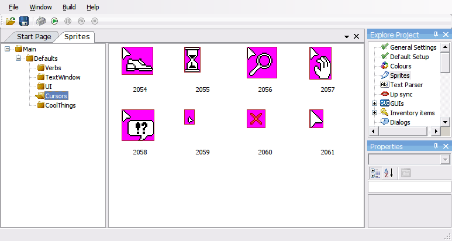
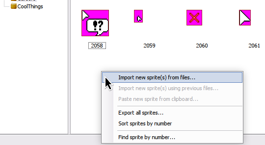

Sprite Manager
The sprite manager is where you can import sprites and organize them into folders. Each sprite that is imported will be assigned a sprite number which is used as its unique identifier.

The sprite manager has two panes, on the left are the sprite folders. Right click here to create a subfolder, rename an existing subfolder, or delete a subfolder (losing all of its contents).

The pane on the right, is where imported sprites are displayed. Right clicking on an empty area will give you the possibility to "import new sprite(s) from files...". This allows you to import one or more compatible image files into your game project.
NOTE: Unlike other game development tools, once a sprite is imported using AGS it is added to the sprite data inside your game project's directory and the source file isn't read again unless you choose to re-import it. This is done by right clicking a sprite and choosing the "Replace sprite(s) from source..." option.
NOTE: You can quickly select all files in a folder by selecting the first file and then pressing Shift+End.
Import Sprite
Once a file or files are selected, AGS will bring up the Import Sprite window.

In this window, AGS will offer you controls which determine exactly how the images files will be used. The most crucial choice is usually to choose how transparency will be determined for the imported sprite, as well as whether to import the entire sprite or use a tiled selection.
If multiple files are being imported they can be processed individually by using the 'Import' button, or all in one go by using the 'Import All' button. The combobox near the bottom left corner of the screen will allow you to change which source image file is currently being displayed.
NOTE: if using the 'Import All' button all remaining images will be imported using the currently selected import options
NOTE: animated GIF frames are treated as separate images, so a 5 frame GIF imported as 2 tiles will result in 10 new sprites being created.
Tiled sprite import
You may have noticed a checkbox called "Tiled sprite import". Some people find this a useful way of importing many frames of a character's animation at once.
In order for this to work, you need to have all your sprites lined up on your source bitmap at even intervals. Then, use the "Import from file" option and import it as usual. Check the "Tiled sprite import" box, and select the upper-left frame.
When you click the left mouse button, the selection rectangle will become un-filled and now you can drag the mouse to define how many frames to import - they'll all be enclosed by selection rectangles. Once you have the correct number, click the left button again and they will all be imported.
Alpha blended sprites
AGS supports alpha blended sprites if your game is 32-bit color. In this case, you need to import a PNG image with an alpha channel (you cannot paste alpha-blended images from the clipboard).
When you do so, AGS will prompt you asking whether you want to use the image's alpha channel or not. If you select Yes, then the sprite will be drawn alpha blended in the game if it is used for a character, object, mouse cursor or GUI.
NOTE: Currently, alpha blended sprites cannot be antialiased, so if you have the Anti Alias Sprites option turned on in Setup, it will not be applied to alpha-blended characters.
Updating sprites
When you import a sprite all the import settings are saved as sprite's properties. This includes the path to the source image file (if you imported from a file; no path is saved if you imported from a clipboard, for instance). It's strongly recommended to keep the source files along with the game, as they will let you to update your sprites easily, and also let fully restore the sprites in game (see the explanation below). Another thing that we recommend is to store the source images inside the project folder, for example, in a subfolder called "Sprites", or any other convenient name. That is because AGS can remember these paths as relative, and if you move your project elsewhere (onto another PC), or share it with your team members, these paths will be kept relative and so sprites may be still updated and restored from these files. If the image files are located outside of the project folder, then they will be remembered using absolute paths, which may become inconvenient.
All the import settings (including source path!) may be edited by hand at any later time by selecting a sprite and refering to the "Properties" panel. The import settings are found in the "Import" category. Multiple sprites may be adjusted at once too, although in that case the "Properties" grid will display only those values that match in all selected sprites, and blank field for the rest.
In order to update the sprite(s) open a context menu and select command "Replace sprite(s) from source". That will reload the images from the source files using latest Import settings.
It is also possible to fully reimport all sprites at once using existing settings, would the sprite images be missing, or corrupted for any reason. This is done by either using "File" -> "Restore all sprites from sources" menu command, or a "Restore all sprites from sources" command from the Sprite Manager's context menu.
Sprite Storage
In AGS project sprites are stored in two separate parts. The sprite's properties, including import settings, are saved in the project's main document (Game.agf), while the images themselves are saved in a file called acsprset.spr (also called "spritefile").
Sprite storage can be configured through Enable sprite storage optimization and Sprite file compression in General Settings, in Compiler category.
- Enable sprite storage optimization, stores sprites in a format that requires less space.
- Sprite file compression, can be set to no compression, RLE or LZW.
All of these options do not affect how sprites look in game, and may be changed or reverted anytime, so don't worry if you realized that you need sprite compression at a later time.
If you have all the source files for your sprites available along with your project, then it is possible to fully recreate acsprset.spr as described in a section above ("File" -> "Restore all sprites from sources" menu command). This also means that you might exclude acsprset.spr file when copying or moving your project elsewhere, like sharing with your team, or putting the project under source control. Remember: this is a good option only if you have sources available. Sprites imported from a clipboard do not have file source and cannot be restored like that.